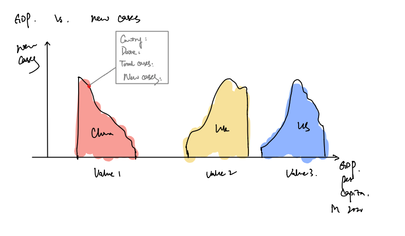
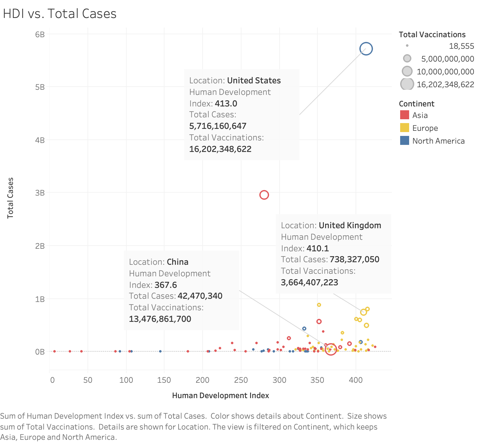
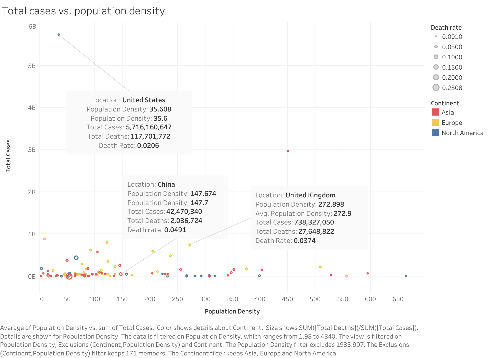
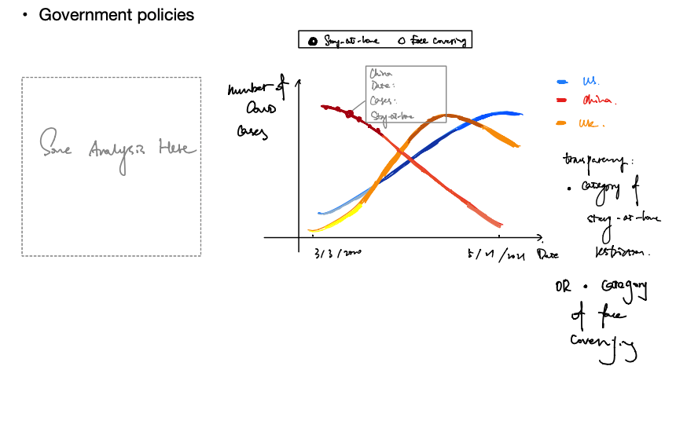
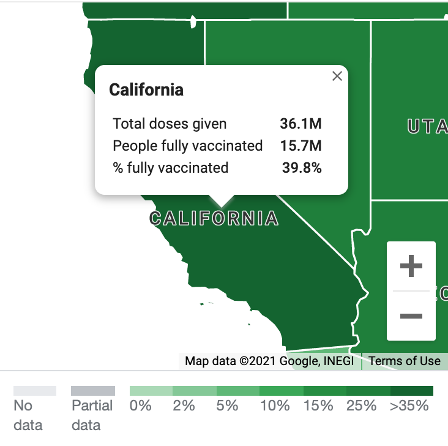

COVID-19 Data Analysis
An exploration of COVID-19 data of US, China, and UK
Overview
Through the visualizations of the COVID data, we will analyze the importance and the impact of COVID in different regions around the world.
Why should we care about COVID and its prevention Effect of the COVID?
COVID-19 has been a worldwide pandemic, people took it as an emergency when it happened in Winter 2020. Each person infected with seasonal influenza may infect approximately 1.3 other people. For SARS-CoV-2 (the virus that causes Covid-19), it is estimated to infect about three times as many people (estimated at 2 to 4). This number is called the reproductive factor, or “R0,” and you may see it referred to that way. This will lead to many, many more cases very quickly, and may overwhelm an already burdened medical system.
<<<<<<< HEAD
It’s true that for healthy people under age 50, it’s not especially lethal — the mortality rate is quite low, but still up to 20 times higher than flu. But it becomes more lethal for older patients. The following chart gives good estimates for mortality rate by age bracket compared to flu. The WHO estimates an average mortality rate of 3.4%, which is around 100 times higher than flu, but does note that average is across age brackets. And while you may not die, you may give it to others, which will overwhelm our healthcare system. 
Death of elder group
Table: display the number of deaths caused by Covid 19 in each age group
test Data Source
We can draw a pie graph and a bar chart with composition of different age groups to display what we’ve observed from the above table.
We can add small titles of China, USA and UK to separately display the pie chart of them.
Data Source
We can draw a pie graph and a bar chart with composition of different age groups to display what we’ve observed from the above table.
We can add small titles of China, USA and UK to separately display the pie chart of them. After we found the result we may observe that older people are much more vulnerable to the pandemic than younger, so we wonder if the seriousness of this pandemic is related to the occupancy of old people in a country.
After we found the result we may observe that older people are much more vulnerable to the pandemic than younger, so we wonder if the seriousness of this pandemic is related to the occupancy of old people in a country.
 From the above graph, China is absolutely an exception from our guess, so indeed there are other factors of prevention.
From the above graph, China is absolutely an exception from our guess, so indeed there are other factors of prevention.
GDP per capita
 From observing the two line chart which represents the relationship between development of GDP and number of deaths and number of confirmed cases respectively, we can see that there is a close relationship as well. Data Source
From observing the two line chart which represents the relationship between development of GDP and number of deaths and number of confirmed cases respectively, we can see that there is a close relationship as well. Data Source
Psychological issue caused by lock down
Covid Cases & Death Graphs (New & Total)
TestB
The data below is the number of confirmed cases and death cases.
What are the possible causes of the difference between the regional cases?
From the above graphs, we can see that there is clearly a distinction between the number of confirmed cases ======= It’s true that for healthy people under age 50, it’s not especially lethal — the mortality rate is quite low, but still up to 20 times higher than flu. But it becomes more lethal for older patients. The following chart gives good estimates for mortality rate by age bracket compared to flu. The WHO estimates an average mortality rate of 3.4%, which is around 100 times higher than flu, but does note that average is across age brackets. And while you may not die, you may give it to others, which will overwhelm our healthcare system.
Death of elder group
GDP per capita
Psychological issue caused by lock down
Covid Cases & Death Graphs (New & Total)
The data below is the number of confirmed cases and death cases.

What are the possible causes of the difference between the regional cases?
From the above graphs, we can see that there is clearly a distinction between the number of confirmed cases >>>>>>> d73240e582ba3cfb26c543d5fdf5b779d49fb9a7 and death cases for different region. In this section, we would like to explore and identify the possible causes of the difference.
GDP vs. COVID-19 cases & HDI vs. Total COVID-19 cases
Since Gross Domestic Product(GDP) per capita and Human Development Index (HDI) are usually used to measure the difference between countries such as living standard, we would like to know about the relationship between the number of cases and GDP/HDI.
Population density vs. Total COVID-19 cases
Government policies
Goverment policies plays a critical role in public management and in reducing the spread of coronavirus. Stay-at-home restrictions and Face covering restrictions are the two widely adapted policies. Therefore, we will focus on these two restrictions in this section to compare the government policies of US, China, and UK.
Vaccination Data Analysis
Type of Vaccination
mRNA - mRNA vaccines are a new type of vaccine to protect against infectious diseases. - MRNA vaccines teach our cells how to make a protein—or even just a piece of a protein—that triggers an immune response inside our bodies. - The benefit of mRNA vaccines, like all vaccines, is those vaccinated gain protection without ever having to risk the serious consequences of getting sick with COVID-19.
Inactivated - Inactivated vaccines use the killed version of the germ that causes a disease. - Inactivated vaccines usually don’t provide immunity (protection) that’s as strong as live vaccines. So people may need several doses over time (booster shots) in order to get ongoing immunity against diseases.
Efficiency
mRNA Data from 43,448 participants, half of whom received BNT162b2 and half of whom received placebo, showed that the vaccine candidate was well tolerated and demonstrated 95% efficacy in preventing COVID-19 in those without prior infection 7 days or more after the second dose.
Inactivated Based on 144 participants in the phase one trial and 600 in the phase two trial - meant the vaccine was “suitable for emergency use”.
Side effect

State Cases & Vaccination Rate
Visualization Design: A map of United States Interaction: Show the Total doses given, and the number of people fully vaccinated, and the percentage of people fully vaccinated.
Sources
About Us
This project was created for the course CSE412.
Template:
The final project will provide hands-on experience designing, implementing, and deploying interactive visualizations for the web. For this project, you will select a topic of interest and author a narrative article and accompanying visualizations to educate and inform a general audience. Think of your project as contributing to our own class newspaper or scientific magazine. The final deliverable will take the form of an explanatory narrative, deployed as an interactive web page using GitHub Pages. You will leverage the template and style provided here.
The theme is data visualization for communicating scientific advancements or social phenomena. How might data visualization help us better understand the workings of our society or our physical world?
Your project must visualize one or more publicly accessible datasets of social or scientific importance. You are free to choose a specific domain of personal interest; for example, you might explore data relevant to your UW major. Example topics include transportation, economic development, humanitarian aid, legislative voting records, and communicating scientific research, among many others. Talk to the course staff if you have any questions regarding the project theme.
This template was created with Idyll, which is a markup language for creating beautiful interactive webpages. For your own webpage, you can customize the particular components and layouts that are used, but the style of the overall page is predefined by our course theme.
Keep reading for examples of how to embed visualizations and modify the format.
Embedding Visualizations
We can easily embed images inline by including a short code snippet referencing an image file: 

Specifying data for dynamic Vega-Lite and D3 visualizations
First, we specify the data that will be used in the visualization with a short code snippet: [data name:"sunshine" source:"sunshine.json" /]. We will reference this dataset with the name sunshine when creating visualizations in Vega-Lite or D3.
Embedding Vega-Lite visualizations
Idyll has support for embedding Vega-Lite visualizations to the page using a similar approach to the standard image. To get started, we need to first install Vega-Lite by running the command: npm i --save idyll-vega-lite. We can then embed a visualization as follows (see the index.idyll file for the actual code):
The main Vega-Lite component uses the JSON syntax, but you can also create Vega-Lite visualizations using the API as follows:
The main thing to note when using the API is that you must call .toSpec() at the end of your code in order to make the IdyllVegaLite component behave normally.
.toSpec() function is an easy way to port visualizations from Observable to your final webpage. Develop your designs in Observable as normal, then copy the JSON specification as follows: JSON.stringify(myVis.toSpec()), where myVis is the name of the variable containing your visualization. The JSON.stringify function allows you to copy the text (string) version of the JSON object. Note that you may have to adjust the JSON spec slightly when adding it to the IdyllVegaLite component in order to import your data appropriately.Embedding D3 visualizations
Idyll has a pre-supported component for rendering D3 visualizations; to create a visualization, you can write a new component that extends this custom class. To see how this work, take a look at the file d3-sunshine in the components directory. In essence, you will create a seperate custom D3 component for each visualization that you would like to create in D3 for your page.
Embedding Tableau visualizations
If you look at the index.idyll, this is how you can embed Tableau visualizations:
TableauEmbed is a custom component defined in the file tableau-embed.js. You can similarly create your own custom components for other types of embeddings.
Embedding Observable visualizations
You can embed Observable visualizations as follows:
The original visualization is on the larger side, so we can display it using a FullWidth component so that the visualization spans the whole width of our browser window. While you can customize the size of the embeded window, the size of the visualizations will be the same as the original Observable document.
Embedding Plotly visualizations
Similar to the other embedded visualizations, you can embed interactive Plotly visualizations using the custom component PlotlyEmbed:
Note that the width and height parameters control the size of the iframe that is embedded in the page, not the visualization, so you will need to design your visualizations with Plotly accordingly, and test the page layout.
Changing the Narrative Structure and Page Layout
The most straightforward (and default) style for a page is basic text like what we have used so far. Visualizations are embedded in place and are scrolled like a standard webpage. But with Idyll, we can do a lot more!
Take the Vega-Lite visualization from earlier, we can display it in the margin alongside the text by wrapping the code with the command [Aside] ... [/Aside].
Perhaps you would like to try including a large image in the background, with text that scrolls by on top of it? With Idyll, that’s easy! Keep scrolling for an example...
To create this scrolling segment of the document, we first specify a Scroller component, which can just be done with [Scroller] ... [/Scroller]. The text and visualizations seen here are specified within this component.
The background is that same Tableau map visualization from earlier, but displayed at a larger size.
To set the background, you can use a Graphic component to wrap the TableauEmbed component from earlier.
The contents for these text boxes are described with the Step component, and can even include other components like the visualizations from before!
Take a look in the index.idyll file to see exactly how this works in the code, and keep scrolling for more examples.
Idyll allows you to mix and match components throughout the document to create dynamic visualizations and compelling narrative layouts. Some other layout options include FullWidth, Inline, and Stepper, among others. Details are included on Idyll’s documentation page for built-in components.
This page also describes a variety of the other built-in components for controlling the dynamic behavior of the document, such as dynamic variables and input widgets like (buttons, range sliders, and dropdowns).
Let’s take a look at some dynamic visualization updates with another scrollytelling example. In this case, we will use a fixed visualization alongside the text and update the visualization as we go. Keep scrolling to see the example...
This Scroller uses some custom CSS to set the background color to ”#33333f”
It also uses custom CSS to style the Graphic (which is a custom D3 component) so that it appears as a fixed visualization next to the scrolling text.
What’s cool about this CustomD3Component is that it updates as we scroll. It does this by leveraging the update function to animate the point as it moves to a new position.
To keep track of where we are in the Scroller, we first defined a dynamic Idyll variable named myLocation using the following code: [var name:"myLocation" value:0 /]
Each time we scroll to a new Step, the Graphic updates it state based on this dynamic variable, which can be used to parameterize the visualization.
Right now, the value of myLocation is 0.00. Cool huh?
Step and the previous one, notice how the value that is displayed changes based on when the new Step is triggered.You can really put anything in these dynamic variables. For example, the Vega-Lite visualization we keep using could have been in a variable.
There’s a better way, though. What if we create our own new custom component? This way we can seperate out our visualizations into different files. See components/my-viz.js for the following example.
You can also use the Vega-Lite API like in the following example, found in components/my-api-viz.js.
Getting Started with Your Project
This template is a starting place for your project. Update the header information to include the relevant details for your project, and then feel free to mix and match the visualization and layout techniques introduced here for your own narrative. Use this template and especially the Idyll documentation as a reference for what you can do.
Think about how the narrative structure draws readers into the story you are telling and how the visualizations interact with the text (and with each other). The narrative should help ensure that the page as a whole is greater than just the sum of its parts. When designing your page, decide on particular layouts that enhance the reader’s experience and understanding of the topic.
Required Software
You must have Node.js installed. You can get it directly from https://nodejs.org/en/.
Installation
- Clone and open your project repo on your own computer.
- Make sure you have
idyllinstalled (npm i -g idyll). - Run
npm installto install project-specific dependencies.
npm is the node package manager. If you’re curious how this works and what the project dependencies are, open up package.json to see where these are listed.
You can install custom dependencies by running npm install <package-name> --save. Note that any collaborators will also need to download the package locally by running npm install after pulling the changes.
Developing a post locally
Run idyll from the command line. Your post will appear at http://localhost:3000/. When the server is running, any local change that you make will be deteched and your webpage will auto-update with the new changes. Your local changes will not be visible to your team members until you push the changes to your repository. These changes will not be reflected in the final website unless you run the build script and push the updated docs folder (see below).
Building a post for production
Run idyll build. The output will appear in the top-level build folder. To change the output location, change the output option in package.json, such as to docs.
Deploying
Make sure your post has been built, then commit the docs folder to your project repository. It will be available at cse412-21sp.github.io/your-repo-name/. For example, you can view the sample embedded Tableau, vega-lite, and d3 charts at https://jhoffswell.github.io/cse412-project-template-idyll/.
Acknowledgements
This template was adapted from the initial Scrollytelling template for Idyll. The code and visualization examples were adapted from the final project template created for a previous offering of CSE 412.